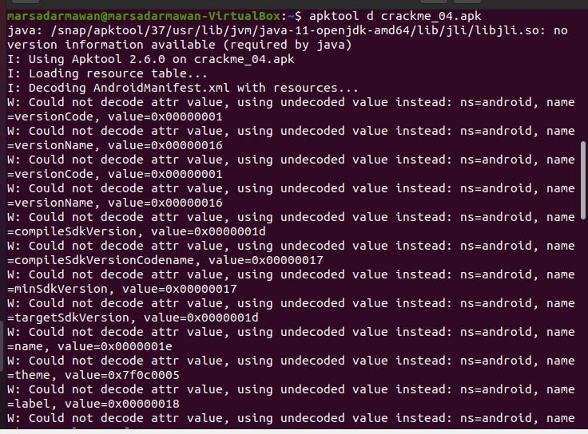
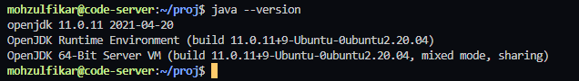
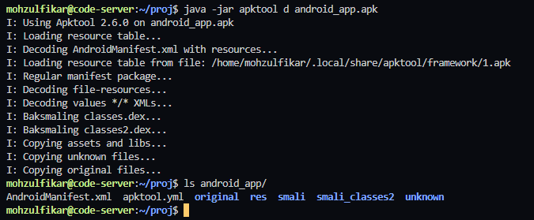

Instalasi Apktool
Samples
Sample screenshot dari error,

Penyebab Umum
- Versi Java tidak mendukung apktool yang dipasang
- Instalasi apktool versi 2.6.0 melalui
apt
Penyelesaian
Sebelum instalasi, pastikan kalian telah memiliki java runtime environment versi 8+. Kalian bisa memeriksanya dengan perintah java --version. Instalasi java dapat dilakukan dengan menggunakan perintah,
1 | |

Instalasi apktool pada ubuntu (20.04) dapat dilakukan dengan perintah berikut,
Pertama, download rilis apktool di github atau bisa menggunakan perintah wget,
1 | |
Jalankan apktool menambahkan perintah java -jar sebelum apktool d ... seperti berikut,
1 | |

Jika masih terdapat error, silahkan dibaca kembali panduan ini atau kalian bisa mecoba lagi dengan mengunduh versi sebelumnya (2.5.0, 2.4.1, dst.).